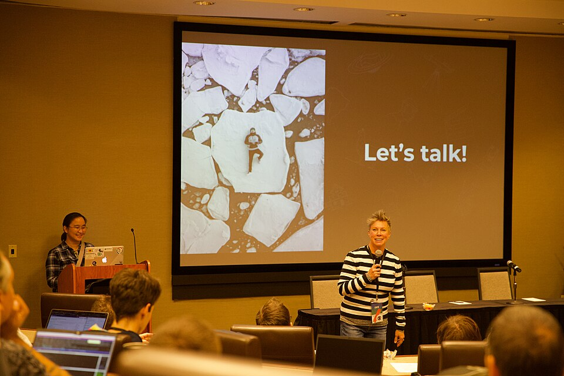

Sobre o evento
O Tech Experience 2027 é um evento acadêmico criado para reunir estudantes, professores e profissionais interessados em tecnologia. Durante a semana, os participantes poderão acompanhar palestras, oficinas e demonstrações sobre temas atuais da computação.

Temas do evento
- Desenvolvimento Front-End
- Inteligência Artificial
- Computação em Nuvem
- Segurança da Informação
- Experiência do Usuário (UX/UI)
Por que participar?
- Conhecer aplicações reais de tecnologia.
- Conversar com profissionais da área.
- Participar de oficinas práticas.
- Conhecer projetos desenvolvidos por estudantes.